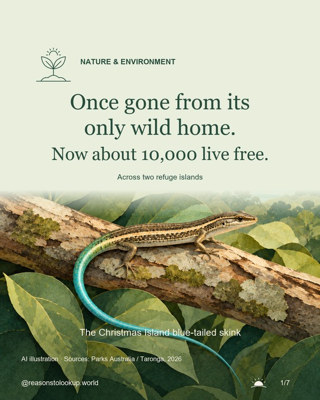

Nature & Environment · Evidence checked 26 October 2026
Once gone from its only wild home.
Now about 10,000 live free.
The story, evidence & photo credit
Nature & Environment · Evidence checked 26 October 2026
Once gone from its only wild home.
Now about 10,000 live free.
The story, evidence & photo credit
Sixty-six rescued Christmas Island blue-tailed skinks founded conservation-breeding populations on Christmas Island and at Taronga Zoo. Descendants were introduced to Pulu Blan in 2019 and Pulu Blan Madar in 2020. These are two individual islands within the Cocos (Keeling) island group, beyond the species’ native range. Horsburgh is another island in that same group and became the site of a third refuge release in 2026.
The early trials needed continuing care. Pulu Blan Madar suffered a decline associated with yellow crazy ants; Parks Australia reported ant baiting and signs of recovery in 2021. The 2026 application describes the two earlier populations as self-sustaining. A 2024 Parks Australia letter reported lower estimates—over 4,000 on Pulu Blan and over 1,400 on Pulu Blan Madar. These different dated estimates are not a standardized population time series.
The official accounts were published on 8 July and 21 September 2026. DAFF places releases in June; other reporting refers to July or June–July. We use “2026” for the release rather than treating an announcement date as the event date. Current accounts retain the IUCN category “Extinct in the Wild”, which can include free-living populations well outside a species’ past range; Australia’s national listing is Critically Endangered.
Population and release figures come from the conservation programme and its permit application. ABC contributes reported interviews, not an independent population census. The cover and rescue scene are AI illustrations. The release and refuge-network diagrams are original schematics; island positions, shapes and sizes are symbolic, and animal symbols are not countable units. The two release arrows on slide 4 represent releases from breeding populations to the two named islands. Slide 6 uses a plus sign to introduce another refuge; it does not depict a transport route or imply that all 545 skinks came from the two earlier islands.
Real photograph in carousel slide 2: supplied by Lisa Cavanagh, Figure 1b of Dodge et al., first published online in 2023, journal issue 2025, Molecular Ecology Resources, DOI 10.1111/1755-0998.13780. Cropped to the skink panel and resized; no generated enhancement. © 2023 The Authors. Licensed under CC BY-NC 4.0 for non-commercial reuse. Article and licence links provide the full source and terms. No endorsement by the photographer or institutions is implied.